One walled Italian city, one walker standing at a fixed door, one gate across town to reach. Three search strategies attempt the same walk: Bidirectional Dijkstra meets itself in the middle, A* follows a compass bearing on the goal, and Hill Climbing refuses to ever look back — until the old city's medieval tangle stops it cold.
One continuous reel: Bidirectional Dijkstra's two waves closing on each other, then A*'s single amber beam leaning toward the goal, then Hill Climbing's pink line walking itself into a dead end a few streets short of B.
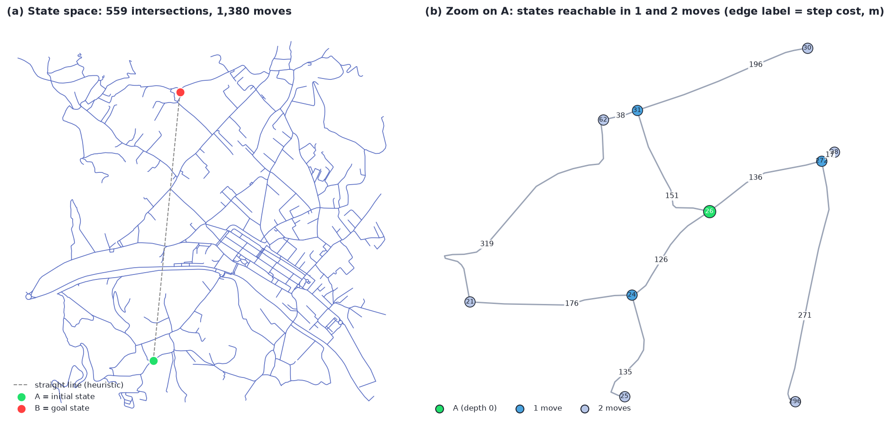
Every intersection in Centro Storico becomes a state; every street segment between two intersections becomes an action, costed at its true length in metres. A start door A and a goal gate B are chosen at random — seeded, so the instance is reproducible — at least half the map's diagonal apart. Finding a route is a single-agent search over that graph.
Same map, same A, same B — three different ideas about where to look next. Each card plays its own run of the instance above: watch the explored streets light up, then compare what it cost.
Two ripples instead of one: a forward wave grows from A, a backward wave grows from B over the reversed streets. Each only has to cover about half the distance, and stops the instant the waves provably meet.
loop while both frontiers hold nodes: if top(F) + top(B) >= best: stop — optimal advance the smaller-radius side settle its node, relax its streets a node seen by both waves updates best
One frontier, ranked by f = g + h: real distance travelled plus the straight-line distance still owed to B. Streets that lean toward the goal get explored first, so the search narrows into a beam instead of spreading in every direction.
push A with f = g + h
loop: pop the node with smallest f
if node = B: stop — optimal
else relax its streets,
push neighbours with f = g + h
No frontier, no memory of where it has been — only the street it's standing on. It always steps to whichever neighbour is closest to B in a straight line, and the moment none is closer, it stops for good.
stand on current look at every neighbour's h(n) step to the one closest to B no neighbour closer → stop, stuck
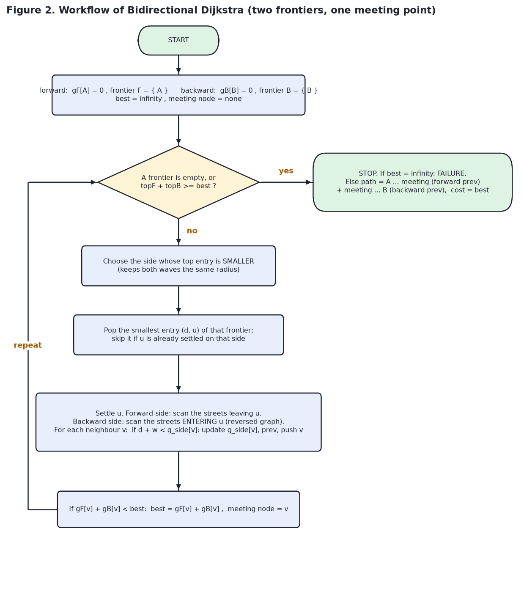
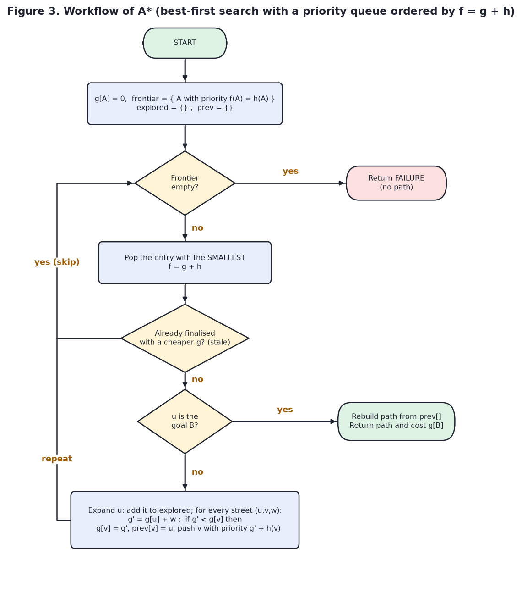
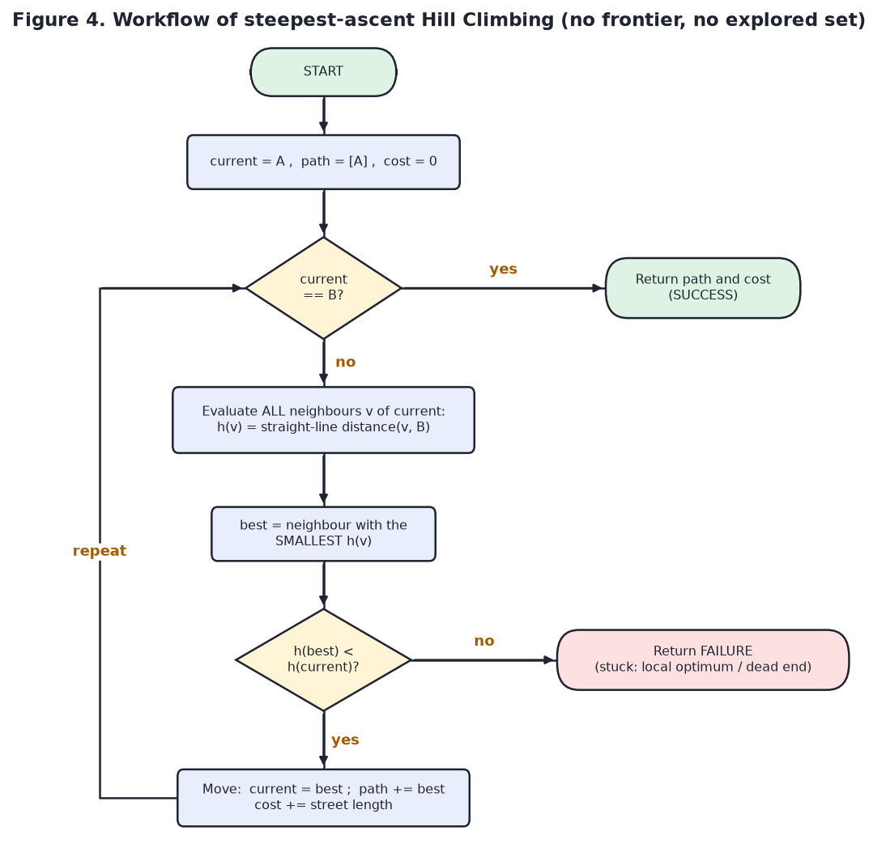
What an algorithm is "thinking about" at any instant is its frontier; what it has already settled is its explored set. Bidirectional Dijkstra keeps two heaps and two explored sets — one per wave. A* keeps one heap ordered by f. Hill Climbing keeps nothing but the ground it's standing on.
| Bidirectional Dijkstra | A* | Hill Climbing | |
|---|---|---|---|
| Frontier | two min-heaps on g, one per wave | one min-heap on f = g + h | none — one current node |
| Priority | distance from its own root | g(n) + h(n) | h(n) of the neighbours |
| Explored set | one settled flag per wave | popped & expanded nodes | not kept — cannot revisit |
| Stop rule | top(F) + top(B) ≥ best | goal popped from the heap | no neighbour is closer |
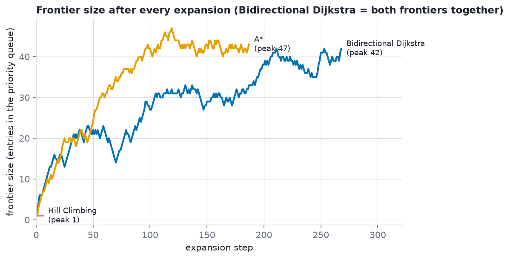
A* and Hill Climbing both steer by h(n): the straight-line distance from an intersection to B. A street can never be shorter than the straight line between its ends, so h never overestimates — which is exactly what keeps A* optimal. Bidirectional Dijkstra needs no compass at all; its speed comes from searching from both ends, not from aiming.
The weakness is the same straight line: it ignores walls and dead ends. In a medieval centre like Lucca that gap is exactly where Hill Climbing gets fooled.
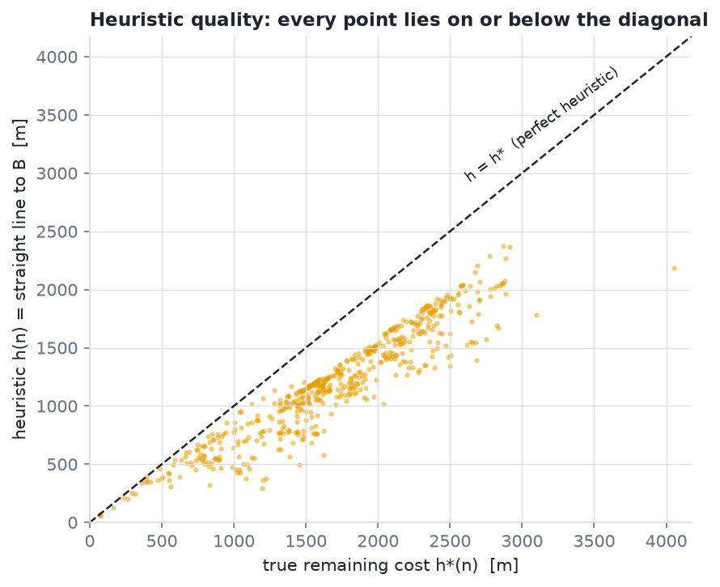
Same walk, same machine, timed as the median of twenty clean runs. Bidirectional Dijkstra and A* both land on the exact optimum; Hill Climbing is an order of magnitude cheaper and does not arrive at all.
| Bi‑Dijkstra | A* | Hill Climbing | |
|---|---|---|---|
| Goal reached | yes | yes | no |
| Path cost | 2,426.5 m | 2,426.5 m | 629.6 m |
| Cost vs. optimal | +0.0% | +0.0% | 1,327 m short |
| Nodes expanded | 257 | 164 | 6 |
| Peak frontier | 42 | 47 | 1 |
| Time, median | 1.34 ms | 0.733 ms | 0.087 ms |
| Peak memory | 24.6 KiB | 30.6 KiB | 28.4 KiB |
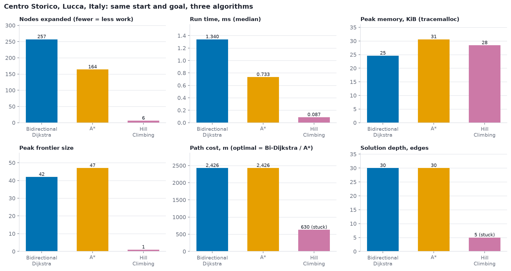
Two identical routes and one abandoned one, on the same streets.
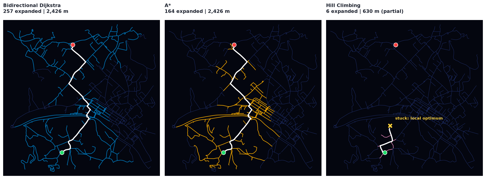
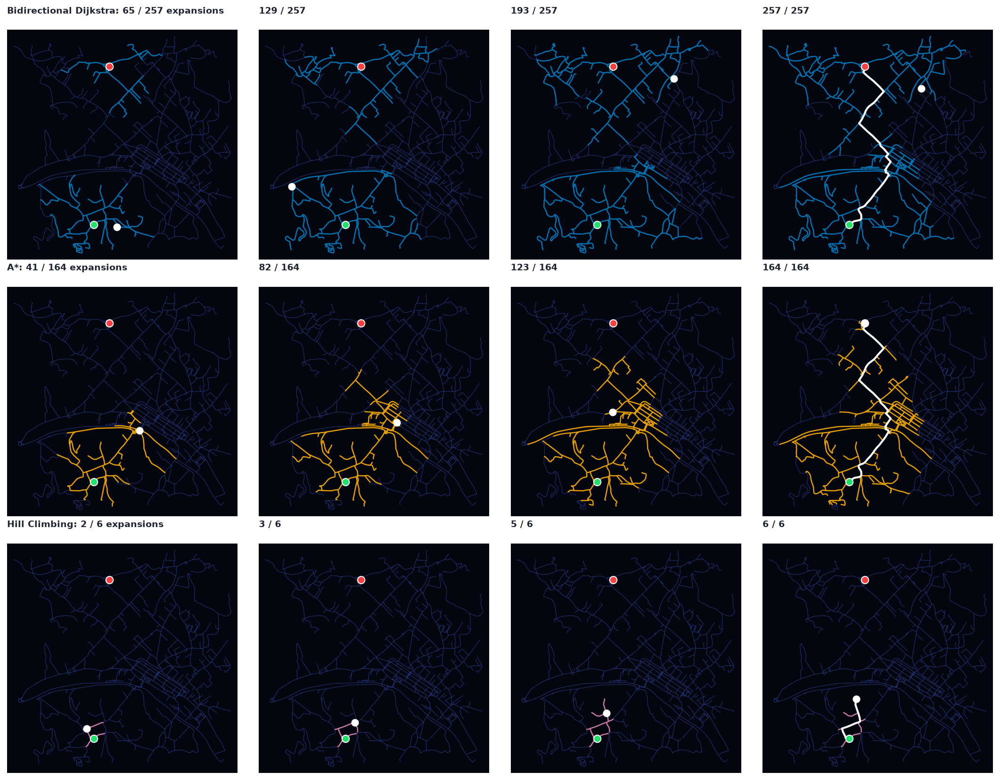
One instance can be lucky. The same three algorithms ran again on 200 random A–B pairs in Lucca, then on four more towns of very different shapes.
| Metric, 200 pairs | Bi-Dijkstra | A* | Hill Climbing |
|---|---|---|---|
| Success rate | 100.0% | 100.0% | 10.5% |
| Mean nodes expanded | 283.2 | 130.8 | 10.1 |
| Mean time | 2.324 ms | 1.116 ms | 0.18 ms |
| Optimal when solved | 100.0% | 100.0% | 4.8% |
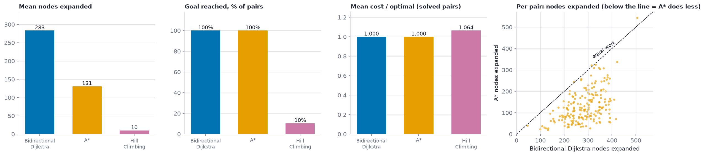
| Town | Nodes | Bi-Dijkstra | A* | A*/Bi-Dijkstra | Hill Climbing |
|---|---|---|---|---|---|
| Centro Storico | 559 | 257 | 164 | 64% | stuck, 1,327 m short |
| Bruges | 3,119 | 1,993 | 1,303 | 65% | stuck, 1,722 m short |
| Chefchaouen | 1,071 | 858 | 557 | 65% | stuck, 1,680 m short |
| Sidi Bou Said | 292 | 189 | 103 | 54% | stuck, 928 m short |
| Hallstatt | 29 | 14 | 10 | 71% | stuck, 1,067 m short |
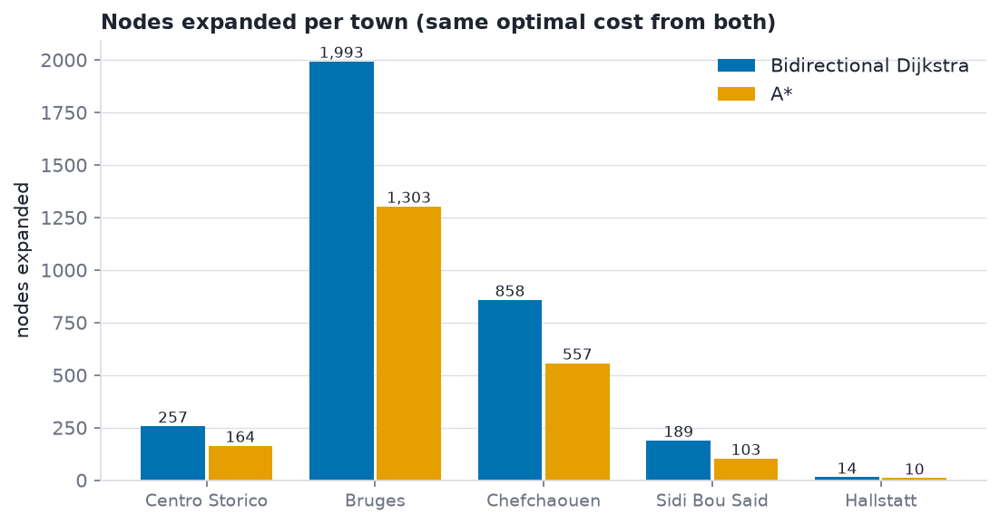
Optimal, and needs no heuristic at all — only a known goal and a graph that can be walked backwards. Its saving comes entirely from meeting in the middle.
Use it when no reliable compass exists.
Optimal, and consistently the cheapest optimal option here — 36–54% fewer nodes than Bidirectional Dijkstra, in Lucca and in every other town tested.
Use it whenever a good admissible heuristic exists.
An order of magnitude cheaper than either — and right only one time in ten, undone by the very dead ends that make an old city worth walking through.
Use it only when speed matters more than arriving.